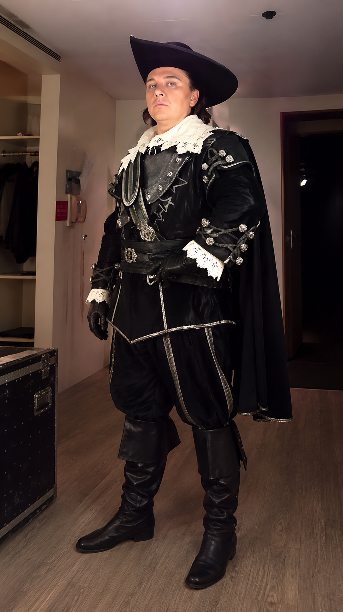

Project card
Così fan tutte / Так поступают все женщины
05 · 2011/12
Пермский театр оперы и балета
Проект
Così fan tutte / Так поступают все женщины - Mozart
Партия
Guglielmo / Гульельмо
Театр и даты
Пермский театр оперы и балета, Пермь, Россия. 2011/12
Дирижёр
Teodor Currentzis
Режиссёр / постановка
Matthias Remus
Художники / production team
Set/Costumes: Stefan Dietrich; Lighting: Heinz Kasper.
Статус проверки
Подтверждено пермской прессой и биографией; точные даты выступлений требуют сверки по афише.